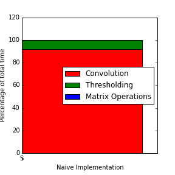
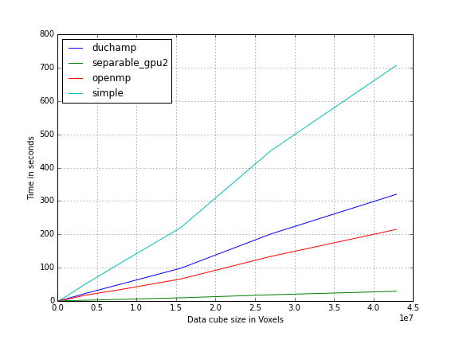
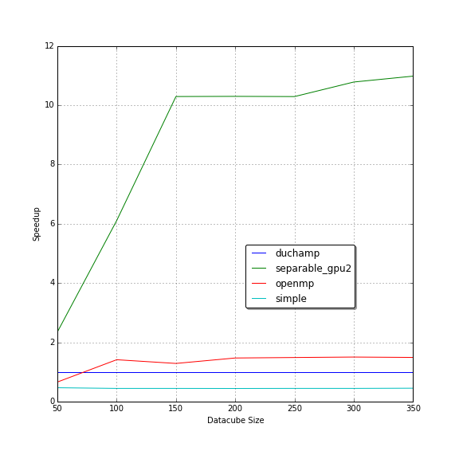
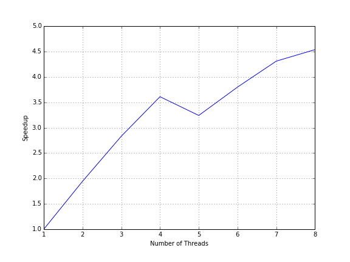
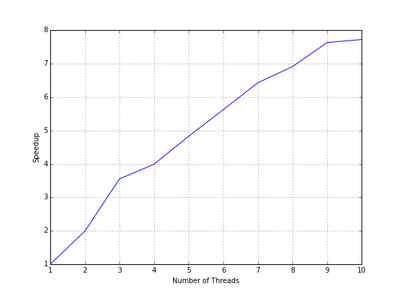

DUCHAMP GPU acceleration achieved an 11x speedup over the original version. OpenMP on 10 CPU cores achieved a 7.8x speedup. OpenMP and CUDA are favorable for accelerating the A' Trous wavelet reconstruction noise removal algorithm within DUCHAMP.
Introduction
Radio astronomy is the study of the universe in the radio spectrum of light.
Identifying galaxies from background noise is a crucial process in radio astronomy.
This process is called source finding and can improve our understanding of galaxy evolution over time.
Source finding is done by astronomers by hand.
This is a tedious and slow process that has been augmented by automated source finders.
Background noise emitted by man-made objects such as cellphones and satellites as well as natural sources like the cosmic microwave background radiation dominate observations in the radio spectrum.
Galaxies sparsely populate the universe making them difficult to differentiate from background noise.
This noise needs to be removed from observations before attempting to identify sources.
All automated source finders perform a noise removal step. % is this necessary to say?
These galactic surveys produce three-dimensional outputs called data cubes that are typically stored in Flexible Image Transport System (FITS) files.
FITS was designed by the International Astronomy Union for storing and transferring astronomy image data.
Modern radio telescopes such as the Karoo Array Telescope (KAT) are more detailed and cover a larger volume of the sky than any existing telescope.
Existing automated source finders are currently unable to process such large observations.
They either run too slowly or limit the size of input observations to the size of memory.
Source finders need to be improved for these use cases.
DUCHAMP is an automated source finder created at the Australia National Telescope Facility that suffers from the these problems.
A general technique to decrease the execution time of algorithms is by splitting the problem into several parts and executing a few at a time simultaneously.
Modern desktop CPUs can run up to eight threads of execution in parallel while graphics processing units (GPUs) can execute up to several thousand simultaneously.
We propose using the computational power of GPUs to speed up DUCHAMP.
CUDA is a proprietary API that exposes general purpose computing on NVidia GPUs.
GPUs are massively parallel and provide high levels of arithmetic throughput in comparison to the CPU.
The high performance of a GPU comes at the cost of high programming complexity.
OpenMP is a multi-platform API to write multi-threaded CPU code in the C family of languages.
It manages individual threads internally and exports a simple API for loop-level concurrency.
The pthreads API is more common, powerful and gives the user more control but with a higher level of programming complexity.
In this paper we present performance improvements to the DUCHAMP source finder.
We investigate performance bottlenecks in the source finder by running a profiler.
We first investigate bottlenecks in the source finder, find algorithmic improvements and then use parallelism to speed it up.
DUCHAMP
DUCHAMP is a three dimensional source finder written by Matthew Whiting at the Australia Telescope National Facility.
The DUCHAMP source finding strategy is the most reliable and complete of all source finding strategies that were tested by Popping et al.
This makes it an ideal candidate for acceleration, as it would be the most useful for use by future large hydrogen surveys.
DUCHAMP currently runs in a single thread on a single CPU core.
There have been multiple attempts to run parts of the DUCHAMP pipeline over multiple CPU core.
Badenhorst et al successfully sped up the A' Trous noise removal algorithm, which was the greatest contributor to the execution time, by 13x with eight threads on a quad-core CPU.
This speed up came with a 6x memory usage penalty.
They found that with the speed up in the noise removal the execution time is now dominated by the statistics section of the pipeline.
Finally, they note that GPU acceleration has the potential to dramatically increase performance.
Selavy 2012source is a distributed version of DUCHAMP that runs across multiple CPU cores across multiple hosts using the Messaging Passing Interface to communicate between hosts.
It too accelerated the noise removal algorithm with a small loss in precision due to using approximate statistics methods and converting from computation with doubles to floats.
It was designed to run on a cluster of nodes each with several CPU cores where the entire data cube is unable to fit onto a single node.
Design
Aims
We aim to accelerate DUCHAMP's noise removal with algorithmic improvements and parallelism to reduce the execution time of the source finder with large data volumes expected from next generation radio telescopes.
We aim for a simple design that is simple to reintegrate into DUCHAMP.
Approach
DUCHAMP's current implementation is single threaded and uses an inefficient version of A' Trous reconstruction.
We accelerate the A' Trous wavelet reconstruction noise removal algorithm with algorithmic improvements and parallelism.
CUDA and OpenMP will be used to parallelise our implementations on the GPU and CPU respectively.
All improvements will be performed on our own code base separate from DUCHAMP to simplify testing and development.
We implement only the code related to reading and writing FITS files and noise reduction.
Our accelerated version of the A' Trous reconstruction is implemented in several phases with a working implementation at the end of every phase.
This reduces the risk of failure due to high levels of complexity.
We verified the correctness of each implementation at the end of each phase.
Constraints
The proprietary CUDA API requires us to use NVidia GPUs in order to run the accelerated DUCHAMP pipeline.
We will not distribute execution over multiple hosts or run data cubes bigger RAM available on a single host due to time constraints.
DUCHAMP and CUDA are written in C++ and our implementation will be written in C++ as well.
Any optimisations that reduce the accuracy of our results will not be attempted to conform to the output of DUCHAMP.
Maintaining backwards compatibility is important to allow our changes to be integrated to DUCHAMP in the future.
Evaluation
Validation
We will evaluate the correctness of our implementations using synthetic data cubes created by Dr Ed Nelson of the UCT Astrophysics department.
Testing with synthetic data cubes is advantageous due to the fact that exact source information is available and can be used to accurately measure completeness and reliability.
Correctness is simply whether the accelerated algorithm produces equivalent outputs to the original DUCHAMP implementation.
A small error is allowed for each value in the data cube due to floating-point approximations.
To check correctness we run both the original and accelerated implementations with the same inputs and log the outputs of each.
The outputs are then compared for floating-point equality and the floating-point error between the two implementations is logged.
Execution time
On completion of each phase the execution time of our accelerated implementation is measured.
The size of the input data cube and the filter size are the only factors that affect the execution time.
To determine the relationship between the size of the input data cube and execution time we test with data cubes of various sizes.
We create data cubes of various sizes by taking subsections of an existing large data cube.
Each implementation is run on all test data cubes three times and the results are averaged over all three executions.
This is done to minimize the affect of background processes on performance.
Our measured execution time is compared to the original DUCHAMP implementation and we measure the speedup.
We benchmarked the result of each phase with data cubes of various sizes.
The benchmarks were run on a desktop with an Intel i7-4790 clocked at 3.6GHz, 8GB of RAM and a NVidia GTX 970 graphics card
as well as the Hex computing cluster run by ICTS.
The Hex cluster has ten NVidia Tesla M2090 GPU's that are designed for general purpose computing and a CPU compute cluster with 18 hosts each with 64 cores and 128 GB RAM.
We use the CPU compute cluster for testing our OpenMP implementation.
We ran the OpenMP accelerated implementation on a varying number of cores to determine its relationship with execution time.
Software Development Methodology
An Agile methodology was used over the course of this project.
Our tasks are divided into small phases.
Each sprint completes at least one phase including running all correctness checking.
The agile methodology is appropriate for this project as it allows us to ensure a continuously working product and prevents us from having a monolithic "acceleration" step to our project.
NVidia has released a guide on what they consider the best work-flow to accelerate your code with GPUs 2012best.
They suggest a four stage acceleration cycle as follows:
- Assess the program, find bottlenecks and small sections of code that dominate execution time by profiling.
Use Amdahl's and Gustafson's law make a prediction of the theoretical speedup that can be attained by paralellising this bottleneck and use this information to decide the best section to accelerate.
- Parallelise the bottleneck found in the previous step.
The code may be paralellised using OpenMP or CUDA.
This may require some factorising if the code is not written in a way that easily allows paralellism.
- Optimise the code as much as possible.
- Deploy and analyse the results.
If this was production software we would deploy to consumers at this stage.
Implementation
In this section we present the details of our accelerated implementations.
We use the cfitsio library to read and write FITS files and the CUDA toolkit version 7.5 for our GPU code.
To simplify the evaluation the accelerated A' Trous algorithm is implemented independently from DUCHAMP.
Our application accepts a three-dimensional telescope observation in a FITS file as input and outputs the noise reduced cube.
Phase 1: Naive Single Threaded
This phase is a reimplementation of the single threaded A' Trous algorithm in DUCHAMP.
Our rewrite is easier to understand than the original DUCHAMP implementation as we factored out many common methods and refactored common sections.
The original version is written in one monolithic function, we split it up into easier to understand methods.
Identifying the next acceleration step follows from profiling our implementation as per the assess step of the APOD process.
Finding where our program is the slowest helps us identify what part to accelerate.
A profiler is used to find slow parts of the program.

The figure above shows us the profiling information of this implementation.
It can be seen that 91% of total execution time is spent in convolving data cubes and that this is the logical section to accelerate.
Phase 2: OpenMP
We accelerated our naive A' Trous algorithm with OpenMP on all the threads available to the CPU.
Identifying the next acceleration step follows from profiling our implementation as per the assess step of the APOD process.
Finding where our program is the slowest helps us identify what part to accelerate.
A profiler is used to find slow parts of the program.
It can be seen that 91% of total execution time is spent in convolving data cubes and that this is the logical section to accelerate.
Phase 2: OpenMP
We accelerated our naive A' Trous algorithm with OpenMP on all the threads available to the CPU.
This was done by applying parallel directives around the convolution loop (step 7 of Algorithm 1).
These directives let subsections of the data cube be convolved in parallel.
This is possible since convolution does not have any intermediate data dependencies.
Phase 3
This phase ported convolution to the GPU.
The partially de-noised data cube is copied to the GPU before convolution and back to the host after the convolution for further processing.
In later phases we can avoid this copy by only modifying the data cube on the GPU.
Each thread on the GPU calculates the partial convolution of a single voxel with a single filter element.
A block of threads calculates the complete convolution of a single voxel in the data cube.
The partial results within a block are added using parallel reduction in $O(\log N)$ addition operations.
The input and output matrices are stored in global memory and the filter in constant memory.
Constant memory is a type of read-only global memory that caches lookups within the streaming multiprocessor for faster subsequent accesses.
Phase 4
This phase incorporates the benefits of separable filtering into the single threaded naive implementation.
The three-dimensional filter is broken up into three one-dimensional filters and applied individually.
Additional memory is required to store the intermediate results until all filters are applied.
Phase 5
We then port the separable implementation to the GPU.
Each thread within a block calculates the result for a single voxel instead of splitting the computation over an entire block as done previously.
Three kernels are execution, one for each one-dimensional filter.
C++ templates are used to specialise kernels for each filter used in the convolution.
Using templates prevents branch divergence and unnecessary comparisons when the filter dimension is known at compile time.
Results and Discussion

Benchmarking shows that the separable GPU implementation (shown in the figure above) is the fastest over all data cube sizes.
Our reimplementation of the single-threaded algorithm (labeled ``simple'' on the graph) does not perform as well as the original DUCHAMP implementation.
Not much effort was put into optimising this version and this is to be expected.
Profiling the simple implementation shows that 91% of the execution time is spent performing convolution.
This is consistent with the analysis by Badenhorst et al.

The speedup graph above shows the speedup of each implementation compared to DUCHAMP's execution time.
Each implementation shows a horizontal speedup for medium to large data cubes.
This tells us that the speedup does not change based on data cube size with the exception of small data cubes.
The increasing speedup for small data cubes can be attributed to constant time startup times that dominate when noise removal takes a short amount of time.
The single-threaded separable algorithm performed better than OpenMP acceleration running on four cores.
The speedup relative to our simple implementation (on which the separable implementation is based) is 4.1x.
The theoretical speedup of 8x discussed earlier is of the convolution algorithm in isolation.
Our measured speedup is of the A' Trous algorithm in its entirety not just the convolution algorithm.
Badenhorst et al had a speedup of 3.7x for their original separable implementation.
They went on to optimise the separable implementation further by transposing the data cube to improve memory accesses and use vector CPU instructions to achieve a 4.5x speedup.
This shows that parallelism is not always the best first step for acceleration.
Algorithmic optimisation improves execution time without requiring specialised or more expensive hardware.
This is beneficial to existing users of DUCHAMP as they do not need to purchase hardware and can simply update in order to benefit from this speedup.
Integrating this change into DUCHAMP would be rather simple as all changes are contained within a single module and would not require software architectural changes.

The OpenMP benchmark was run on a desktop machine as well as the Hex computing cluster.
The desktop machine has four physical cores each with Hyper-Threading enabled.
Hyper-Threading lets a single physical core appear as two logical cores.
Figure 4 c above plots the speedup of the implementation versus the number of threads running on the desktop.
Speedup grows with the number of cores until we reach the number of physical cores available.
Increasing the number of cores still gives us an increase in speedup but at a much lower rate.
Adding four more virtual core only gives us a speedup from 3.5x to 4.5x.

Running on the Hex computing cluster showed that increasing the number of cores gives a linear increase in speedup.
The speedup is less than the number of cores it is run on and appears to grow linearly.
The initial GPU port of the convolution algorithm split the calculation of calculating a single voxels result over a block of threads.
It was quickly determined by profiling that this was not making efficient use of the available computing resources.
We made each thread compute a single voxels result instead of only a part of it.
This improved the speedup from 3x to 11x by a simple reallocation of work.
The speedup of each separable GPU implementation is shown in Figure 2 b as separable_gpu and separable_gpu2 respectively.
Porting the separable implementation the GPU gave a 5.8x speedup over the single-threaded version and 11x overall against the benchmark.
Profiling this accelerated implementation shows that convolution no longer dominates the execution time of the algorithm and only contributes to 14% of total execution time (see Figure 3 b).
54\% of execution time is now spent in the thresholding operation.
Further acceleration of convolution would now show diminishing returns.
Thresholding involves removing all values of a matrix that are above some multiple of the median of the matrix.
Finding the median is performed with the average case linear time QuickSelect algorithm.
Parallel merge sort has a time complexity of $O(\log N)$ with $N$ parallel cores which is better than the complexity of QuickSelect.
Replacing QuickSelect with parallel merge sort on the GPU was more than twice as slow as the highly optimized QuickSelect from the C++ standard template library.
Accelerating the thresholding proved to be difficult.
Selavy suffered from this problem and solved it by calculating the median of a subset of the data which can be done faster at the expense of precision.
We are constrained to having output equivalent to that of DUCHAMP and was unable to perform this optimisation.
The various matrix addition and multiplication operations are the next largest contributers to execution time.
Porting this to the GPU further slowed down execution time and this was reverted.
This was due to the overhead of copying to and from GPU memory.
We measured the accuracy of our implementations by calculating the absolute difference between our implementations results and DUCHAMP.
We found that the average absolute difference was $2 \cdot 10^{-6}$.
This is small enough that it does not affect the remaining
Conclusions
In this paper we presented a series of performance improvements to the DUCHAMP source finder.
The algorithmic and hardware changes are orthogonal and can be applied independently of each other.
In the case that GPU hardware is not available the algorithmic improvements still apply.
Separable filtering is an algorithmic improvement that improved our execution time by 4.1x.
We found that the execution time of wavelet reconstruction noise removal is largely dominated by massively paralellisable convolution operations.
The next largest contributor to execution time are statistics operations which we did not benefit from GPU acceleration.
We conclude that GPU acceleration is a viable and useful way to speed up the DUCHAMP source finder.
The speedup achieved by OpenMP on ten cores is 7.8x which is comparable to that of our GPU accelerated implementation.
OpenMP and the use of separable filtering is a lower cost way to achieve very good speedups without purchasing additional GPU hardware.
Further improvements to noise reduction would require us to reduce the accuracy of our thresholding operation.
Overall we achieved a speedup of 11x over the DUCHAMP benchmark.
Future Work
This implementation limited the size of the data cube to the size of GPU memory.
This can be subverted in future implementations by streaming the data cube into the GPU, processing and then streaming it off.
Hopefully this can provide a way to deal with arbitrarily large data cubes.
The strides in separable filtering prevent it from using the cache effectively.
There are optimisations that first rotate the input before applying a filter that has been shown to improve performance.
DUCHAMP's source merging phase compares every detected source with every other source. This can be improved by a constant factor using space partitioning techniques.
DUCHAMP has a long serial pipeline and improvements need to be made at every stage to completely improve performance.
S+C acceleration increased with cube size from 2.88x on a 327MB data cube to 8.6x on a 2.3GB data cube. Execution time reduced from 535 seconds to 70 seconds, a 7.6x speedup which makes GPU processing favorable.
Introduction
The SoFiA source finding framework is being developed in preparation for various ASKAP surveys: WALLABY, a wide survey covering 3/4 of the sky at z-0.25; DINGO, a deep survey reaching z-0.4; and APERTIF.
It is intended to search for emissions on multiple scales while also considering variations in noise level. Three source finding algorithms are implemented: Simple threshold, Smooth-and-Clip (S+C), and Characterised noise HI (CNHI). SoFiA's modularity allows additional algorithms to be integrated.
Data is stored in the 3D Flexible Image Transport System (FITS) format, adequate for MeerKAT and ASKAP surveys which will generate spectral data cube sizes of up to 2.5 Terabytes. The 3D data is represented by two spatial dimensions which map to coordinates in the sky and one spectral dimension which maps to the spectral frequency of HI detections.
Intensity threshold source finders such as S+C compare pixel values against an absolute threshold to classify source pixels. An inherent limitation is a decreased contribution of total flux in higher resolution data cubes as sources are distributed into a larger number of pixels.
SoFiA's pipeline consists of five stages: First, data is input and modified according to flags or weights; Second, filters are applied to reduce noise; Third, source detection which employs various source detection algorithms; Fourth, sources are merged and parametrised; Fifth, the results and binary mask containing sources are output.
Most source finding packages and algorithms execute sequentially and are CPU bound. The Scalable Source Finding Framework (SSoFF) by Westerlund et al. has been developed to distribute workload among a grid based cluster of nodes, but source finders need to be implemented individually. The SSoFF implementation of the Parallel Gaussian source finder (PGSF) is such an example. PGSF was later implemented on the Graphics Processing Unit (GPU) by Westerlund et al. who report significant speedups over the CPU. Similar GPU results have been reported by Huang et al. of a 25x speedup and 9x less energy consumption than multi-threaded CPU implementations.
The favorable performance and energy consumption of GPU processing makes it an attractive technology for use in radio astronomy surveys such as MeerKAT and ASKAP. We aim to accelerate the S+C implementation in SoFiA on the GPU using CUDA, and are interested in the amount of speedup and computational throughput obtainable. We hope to decrease astronomer's time-to-result when using the SoFiA package and increase the throughput of ASKAP and MeerKAT surveys.
The Smooth-and-clip algorithm
The Smooth-and-Clip (S+C) algorithm in SoFiA performs a 1D filter convolution in a specific order along each individual axis. A Gaussian filter is first applied along the Y-axis, then again along the X-axis, and lastly either a uniform or a gaussian filter is applied along the Z-axis. After the data cube has been smoothed the pixel values are fitted against a Gaussian distribution from which the Root Mean Square (RMS) is calculated. The RMS value is the intensity threshold to add pixels to the mask. SoFiA uses the Gaussian and Uniform filter provided by scipy's image processing module. scipy is a python library with calls to C and Fortran code optimised for compute.
Design
We aim to replace CPU intensive filtering from S+C with CUDA implementations in C to be processed on the GPU. The implementation is designed to be integrated back into SoFiA with minimal overhead to its existing pipeline.
We design for individual compute nodes equipped with a CUDA enabled GPU device. When data exceeds device memory, the data cube will be split and processed in parts on the GPU. Compute nodes contain at least 4GB of memory to process data cubes of up to 2GB. Data cubes are in the Flexible Image Transport System (FITS) file format. The implementation is developed against version 0.4.0 of SoFiA's github repository. SoFiA's default parameter set for S+C will be supported and fall back gracefully to original serial execution where either the control flow has not been implemented for the input parameters or no CUDA enabled device is detected.
Approach
In the first pass, the execution time of the S+C algorithm is analysed to detect slow sub-routines, which are re-implemented with a serial-C library with matching API. Test cases for each implementation verify output against the original version. In the second pass we parallelise the serial-C version in two phases: First with a multi-threaded OpenMP implementation and second with a CUDA implementation.
System Architecture
SoFiA's original architecture remains unchanged: Our implementation integrates with SoFiA's pipeline. Here, the left column represents the S+C pipeline written in Python and the right column represents our implementation written in C with its CUDA kernels. The data cube is processed in place and in parts on the host using device memory.
Hardware
Computations were performed using facilities provided by the University of Cape Town's ICTS High Performance Computing team: http://hpc.uct.ac.za. Execution time is evaluated on hardware provided in table
Profiling Smooth-and-Clip
S+C execution appears linear with respect to cube size and global RMS calculation adds nearly 75% onto the overall execution time. The kernel sizes increase every 4th kernel in X and Y to 0, 3 and 6 respectively which explains the stepped effect. Kernel sizes in Z cycle between 0, 3, 7, 15 yet appear constant in 3, 7 and 15 because the Uniform implementation is independent of kernel size.
RMS
Global RMS is responsible for 99% of total RMS time on the 2.3GB cube and contributes 38.8% to the combined execution time. RMS during filtering contributes 0.05% towards filtering time and is unaffected by kernel size. We conclude that accelerating RMS is worthwhile given global RMS execution time.
Filtering
Filtering contributes 61.1% of the reduced pipeline's execution time, with the Gaussian and Uniform filters contributing almost entirely towards filtering. Gaussian filtering, applied to both X and Y axes, increases with kernel size. Uniform filtering, applied to the Z axis, is unaffected by kernel size. In total filtering consumes 327 seconds, with 150 seconds for Gaussian filtering and 174 seconds for Uniform filtering for the 2.3GB file.
CUDA Evaluation
S+C is evaluated with the APOD development methodology provided by the CUDA Best Practices Handbook. Our primary focus is CUDA acceleration and we do not optimise for the serial-C and OpenMP implementations. Assessments to CUDA implementations are incremental and calculate the speedup against the original python execution time. S+C is implemented by the SCfinder_mem method from pyfind.py in the sofia module. We evaluate SCfinder_mem's execution time as the ultimate acceleration metric achieved for the project.
Implementation
The implementation, although focused on acceleration, is designed to be compatible with the SoFiA package. This is done to maximise the likelihood of integrating the changes back into SoFiA. We make no adjustments to the SoFiA pipeline itself, instead we alter the SCfinder_mem sub routine by replacing the filtering processes with a single call to our own python method C_SCfinder_mem which takes the copy of the data cube and a kernel as input. This is a wrapper method which uses CFFI to call to our C implementation and performs the same filtering logic as the replaced lines but instead using CUDA for filtering.
Gaussian filter implementation
Gaussian performs separable convolution along X and Y axes, which have the least stride in memory alignment. Our Gaussian implementation therefore subdivides the cube along the Z-axis, ensuring X-Y planes of data fit onto the device in their entirety. This has three advantages: A simpler kernel which does not need to handle padding within the planes themselves, but only at their borders with zeros; both X and Y filtering is performed per plane with a single copy to the device; and this favors the typical cube structure which are longer along the spectral Z-axis. However, it is unable to split X-Y planes and cannot process cubes where a single X-Y plane is too large to fit onto the device. We utilise shared memory to minimise latency from memory access since each pixel samples multiple neighbouring pixels. The gaussian weight values are calculated once on the CPU and cached in constant memory on the device for low latency access. We tested a range of CUDA kernels to find an optimal implementation.
Uniform filter implementation
The Uniform filter performs a 1D convolution along the Z axis, which has the biggest stride in memory alignment. Fortunately we take advantage of a sliding average implementation which amortises the memory accesses required in the initial average calculation and remaining accesses to 1. This implementation starts at the first Z-index and processes pixels along Z until the end pixel is reached. Generally the matrix is transposed beforehand to coalesce pixels along the Z-axis which results in a significant performance improvement. We did not implement this as it requires a duplicate cube and this would break our limited memory constraint and we did not attempt an in-place matrix transposition with the GPU. Data is subdivided into sections by the Z-axis in the same manner as the Gaussian filter except in this case pixel values are required for padding. Sliding averages are calculated at the beginning of each Z-index per section. Each Z-index is assigned to a single thread. A disadvantage of this is the number of averages calculated per Z-index increases by the number of sections. Each pixel is accessed only once so we would not benefit from shared memory and the implementation just uses global memory.
We note that the CUDA implementation crashes abruptly when there is insufficient device memory and it is difficult to predict how this will happen. We could not allocate all available memory without experiencing a crash and as a result shave off 15MB from the reported available memory, but we do not know of an optimal value.
Results and discussion
We first detail speedups for the Gaussian and Uniform filters and RMS, then list final speedups on S+C execution time. The Gaussian code ran on data cubes with a fixed height of 320px and varied square, planar width. The Uniform code ran on data cubes with a fixed square, planar width of 320px and varying height. The S+C results ran on the 327MB, 724MB and 2.3GB FITS files. CUDA results are discussed in their order of implementation using the APOD approach.
Gaussian filter
The original CPU version runs in quadratic time with respect to cube size and increases with respect to increasing filter size. The spike is a result of paged memory alignment. Here the data cube with square width of 512 results in memory accesses aligned to the same line in cache. This causes frequent L1 and L2 cache in-validations from paged memory alignments. Our CUDA implementation did not experience the same effect and the result is a dramatically increased execution time on the CPU and comparatively high speedups that obscure results. Cube sizes therefore avoid powers of 2 but are detailed separately.
Our serial-C implementation is much slower than the original scipy version, which is heavily optimised for speed. However, our implementation uses less memory at 2 times the original cube size whereas the SoFiA implementation peaks between 3 and 4 times the cube size. The OpenMP implementation performed up to 1.5x faster than the original scipy version on the quad-core i3 CPU.
Our naive, unoptimised CUDA implementation on a 430 GT device using Doubles, shared memory and a block size of 1024 threads (32x32) shows constant speedup or around 1.5x on all cube sizes. The dip in performance for small cubes is likely due to overhead in copying data between device and host. For Doubles, filter sizes of 15 could not be computed on the 430 GT device due to limited memory. A kernel of size 12 is used instead.
The naive implementation is first improved for for memory access and second for compute time, since memory latency is the biggest contributing factor to GPU performance. Due to time constraints we did not attempt low priority optimisations specified in the CUDA Best Practices Handbook. The first improvement aligns Y-axis pixels in shared memory for processing on the Y-axis. The improvement is minimal and constant, with larger gains achieved by larger filters due to the increased coherent accesses.
The implementation is then optimised to use Floats instead of Doubles. This affects both memory access and compute time as the memory footprint is halved, allowing twice the number of pixels to be processed per interval by the GPU. The GPU has more floating point arithmetic units than double floating point arithmetic units and the extra usage results in higher occupancy. The improvement is more pronounced at larger cube sizes that exceed device memory and benefit from half the number of data transfers, but is difficult to see at the given scale.
Next we optimise for compute time. The Nvidia Graphical Profiler reported that reducing the block size from 1024 to 256 threads increases the number of concurrently executing warps from 32 to 48, which increased the speedup from 2.5x to 3.5x.
The graphical profiler also reported under utilisation of shared memory, which can increase from 4KB to around 8KB and maintain 48 concurrent warps. The number of pixels loaded into shared memory and convolved per thread is increased to 4. This amortises the cost of calculating pixel indexes and reduces the proportion of padding in shared memory, reducing redundant loads from global memory and increasing occupancy to nearly 100%. However, increases in occupancy values above 50% do not necessarily improve performance.

The spike at 512px is due to frequent cache invalidation caused by memory alignments. No optimisations were implemented and the speedups are purely the result of cube widths a multiple of 64.
Asynchronous memory copies and kernel calls execute concurrently on devices with multiple compute and copy engines. The 430 GT device has 1 copy and compute engine and did not increase in speedup. The visual profiler reported that kernels begin executing nicely after the first copy task completes but do not begin to copy back to the host until the last kernel has completed. Increasing the number of asynchronous memory transfers and kernel calls to 8 on the Tesla M2090 device utilises its 2 copy engines to hide memory latency even further and improve speedups to 20x on larger filters.
The last two optimisations use the improved hardware on the Tesla M2090. The blocksize is increased from 256 to 1024 threads which achieves a slight performance gain that is more pronounced on larger cube sizes. Finally, the number of consecutive pixels processed per thread is increased from 4 to 10. This is the maximum we could achieve and may not be optimal, only improving the 15px filter.
With large kernel sizes, this best implementation of the Gaussian kernel achieves a maximum of 23x speedup.
Uniform filter
Execution of the Uniform filter is linear with respect to cube size and independent of kernel size. This is due to the sliding window implementation, which amortises memory accesses to 1 per pixel.
The OpenMP implementation performed poorly, with a speedup of about 1.1 on the desktop CPU for every kernel size except 1. The kernel with size 1 yielded a constant speedup of 20 for Doubles and 40 for Floats. We attribute the otherwise low speedup to large strides in memory access along the Z-axis.
Our initial naive CUDA kernel uses Doubles and achieves a relatively constant speedup of around 6 on the 430 GT device. This implementation reaches a performance plateau at a cube height of 320px, which is likely the point at which global device memory becomes fully allocated and occupancy is maximised.
As before, we first optimise for memory accesses and second for compute time. Using Floats instead of Doubles halves cube size and memory strides. The adjustment is trivial and doubles the speedup to around 12. Smaller filter sizes have slightly larger speedups than larger filter sizes, which is likely due to fewer strided memory accesses. The opposite effect is seen in Gaussian filter sizes.
Speedups on cube sizes which are powers of 2 increase linearly. This is similar but not as obvious given the cube range. We do not experience spikes in performance as we do with the Gaussian filter but instead experience overall increased speedup of up to 20x. This is achieved with square widths of 256 pixels and varying height by increments of 64.
The optimal Uniform filter kernel achieved similar speedups on the desktop machine and HEX, with a maximum speedup of 13.78x on data cube sizes which are not a power of 2.
RMS
As of v0.5.0 of SoFiA the RMS method has been improved and our efforts to accelerate it are no longer appropriate. However, we briefly report on the results achieved for this method. We found that 94% of the total RMS execution time is in the histogram binning process and a naive serial-C implementation was written to replace it, which reduced the execution time from 208 to 32 seconds on the 2.3GB cube, a 6.4x speedup. Further reductions are expected using OpenMP but we did not explore this as filtering remained the primary bottleneck.
Smooth-and-Clip speedup
S+C results are achieved after integrating the Gaussian and Uniform CUDA kernels and the serial-C histogram method. We ran S+C on the three FITS files and the results show a linear relationship between execution time and cube size.
Kernel sizes only increase in X and Y every 4th kernel which results in the stepped behaviour. However, kernel sizes in Z cycle between 0, 3, 6 and 15 which results in the jittered behaviour clearly apparent. Gaussian filtering execution time reduced from 150 seconds down to 16, a speedup of 9x. Uniform filtering reduced from 174 seconds to 20, a speedup of 8.3x. Local RMS as mentioned previously reduced from 1.89 to 0.225 seconds, a speedup of 8.4x.
Overall execution time is reduced by a factor of 7.6x from 535 seconds to 70 on a 2.3GB data cube. The original implementation has constant throughput of 4.3GB/s on all three data cubes, while throughput for the accelerated implementation is 16GB/s, 23GB/s and 32GB/s for the 327MB, 724MB and 2.3GB files respectively.
Conclusions
We have accelerated the S+C implementation in the SoFiA source finding package as follows: The filtering logic using scipy's Gaussian and Uniform filters were replaced with a C method executing similar Gaussian and Uniform CUDA kernels. GPU device memory is used as a convenient buffer to avoid redundant memory use on the host. Gaussian filtering is performed on two axes, X and Y, while Uniform filtering is performed on Z. In addition the Uniform filter implementation performs fewer memory accesses independent of filter radius.
Despite this the original Uniform filter took longer on the host, at 174 seconds, with the Gaussian filter taking 150 seconds on a 2.3GB data cube. Similarly, the Uniform CUDA implementation ran slower at 20 seconds as opposed to 16 seconds for the Gaussian CUDA implementation. The poorer performance is a result of the Z axis having the largest stride in memory access but may benefit from in-place matrix transformation to coalesce Z-axis pixels in memory. Progressive, incremental improvements in the Gaussian kernel allowed us to achieve speedups of over 20x for larger kernel sizes.
The GPU is highly beneficial for data cubes whose size is a power of 2. This is a result of degraded performance on the CPU due to frequent cache in-validations from aligned memory accesses. The GPU does not experience this, and a data cube of 512x512x256 achieved a 26x speedup with a filter radius of 3px, while similar cube sizes only achieved a 5x speedup. Our implementation uses less memory at 2 times the original cube size whereas the SoFiA implementation peaks between 3 and 4 times the cube size.
Overall, S+C acceleration increased with cube size from 2.88x on a 327MB data cube to 8.6x on a 2.3GB data cube. Execution time reduced from 327 seconds to 39 seconds using 2.3GB data. Combined with global RMS total execution time was reduced from 535 seconds to 70 seconds, a 7.6x speedup.
Results show CUDA is favorable over the CPU for filtering processes in source finding algorithms such as S+C in SoFiA. However, S+C is a single source finding algorithm and individual effort is required per algorithm to accelerate entire general purpose source finding pipelines such as SoFiA, as is also the case with the SSoFF framework.
Future work
The CUDA Best Practices Handbook lists several libraries which are optimised for CUDA processing such as cuBLAS and cuFFT. These could be used to mitigate the manual effort required to implement CUDA kernels in general pipelines such as SoFiA. Additionally, pyCUDA could be tested instead of C or C++ CUDA implementations, as this would avoid the complexity of maintaining C/C++ code in addition to Python.
S+C supports both Uniform and Gaussian filtering along the Z-axis (spectral axis). Our implementation only supports Uniform filtering along Z, and work needs to be done to modify the Gaussian filter to the filter Z in addition to X and Y.
The Gaussian kernel requires that entire X-Y planes of data are copied onto the device. This limits the maximum width of the data cube that can be processed to the available memory on the device. In order to process these larger cubes they would have to be subdivided on the host or elsewhere before being processed. The kernel can be adjusted with some effort to process subsections of X-Y planes and accommodate the necessary padding this incurs. However, this may not be necessary as data cubes are longer along the spectral Z axis and not X-Y.
The code and additional dependency on CFFI can be integrated back into the SoFiA package. This project uses v0.4.0 of SoFiA but at the time of writing v0.5.0 has been released and further versions are under development. As of v0.5.0 the SoFiA developers have been focusing on C++ re-factors to integrate OpenMP into the pipeline and our CUDA efforts should not conflict with theirs. OpenMP re-factoring on their part will conveniently clear a pathway for CUDA integration, which is yet to be undertaken.


{kind=link}
{kind=link}
{kind=link}
{kind=link}
{kind=link}
{kind=link}
{kind=link}
{kind=link}
{kind=link}
{kind=link}
{kind=link}